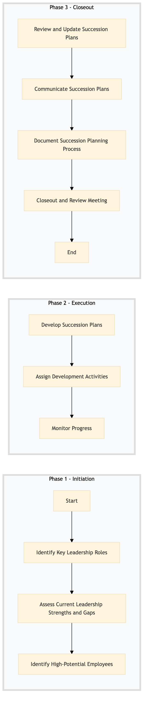

| Role | Steps |
|---|---|
| Human Resources Manager | 1.1 1.2 1.3 2.1 2.2 2.3 3.1 3.2 3.3 3.4 |
| Talent Development Specialist | 2.1 2.2 2.3 3.1 3.2 3.3 3.4 |
| Step | Name | Role | System | Input | Output | KPI | Dec? | Exc? | Pain Point / Risk |
|---|---|---|---|---|---|---|---|---|---|
| 1.1 | Identify Key Leadership Roles | Human Resources Manager | Oracle OPERA Cloud | Hotel organizational chart | List of key leadership roles | Less than 2 hours | N | Y | Accurate identification of critical roles can be challenging due to evolving hotel needs. |
| 1.2 | Assess Current Leadership Strengths and Gaps | Human Resources Manager | Oracle OPERA Cloud, Workday HCM | Performance reviews, employee data | Strengths and gaps assessment report | Less than 4 hours | N | Y | Balancing subjective performance assessments with objective data can be complex. |
| 1.3 | Identify High-Potential Employees | Human Resources Manager | Oracle OPERA Cloud, Workday HCM | Employee performance data, succession planning criteria | List of high-potential employees | Less than 3 hours | N | Y | Defining and consistently applying high-potential criteria can be subjective. |
| 2.1 | Develop Succession Plans | Human Resources Manager, Talent Development Specialist | Oracle OPERA Cloud, Workday HCM | High-potential employees list, job descriptions, development frameworks | Succession plans for each identified successor | Less than 5 hours per plan | Y | N | Creating detailed and actionable plans that align with business goals. |
| 2.2 | Assign Development Activities | Human Resources Manager, Talent Development Specialist | Oracle OPERA Cloud, Workday HCM | Succession plans | Assigned development activities and timelines | Less than 2 hours per plan | N | Y | Ensuring alignment of development activities with individual career goals and organizational needs. |
| 2.3 | Monitor Progress | Human Resources Manager, Talent Development Specialist | Oracle OPERA Cloud, Workday HCM | Assigned development activities and timelines | Progress reports | Less than 1 hour per report | Y | N | Regularly tracking progress without overwhelming employees. |
| 3.1 | Review and Update Succession Plans | Human Resources Manager, Talent Development Specialist | Oracle OPERA Cloud, Workday HCM | Progress reports, business changes | Updated succession plans | Less than 3 hours per plan | Y | N | Adjusting plans to reflect changing organizational priorities and employee development. |
| 3.2 | Communicate Succession Plans | Human Resources Manager, Talent Development Specialist | Oracle OPERA Cloud, Workday HCM | Updated succession plans | Communication plan and materials | Less than 2 hours per communication | N | Y | Effectively communicating plans to all stakeholders while maintaining confidentiality. |
| 3.3 | Document Succession Planning Process | Human Resources Manager, Talent Development Specialist | Oracle OPERA Cloud, Workday HCM | All process steps and outcomes | Comprehensive succession planning documentation | Less than 4 hours | N | Y | Maintaining accurate and up-to-date documentation for compliance and future reference. |
| 3.4 | Closeout and Review Meeting | Human Resources Manager, Talent Development Specialist | Oracle OPERA Cloud, Workday HCM | Succession planning documentation | Meeting minutes and action items | Less than 1 hour | N | Y | Summarizing the process effectively to ensure all stakeholders are aligned. |
HR-TL-08 Succession Planning & Talent Pipeline is a structured process to identify and develop potential leaders within Marriott Bonvoy hotels. This ensures continuity of leadership and enhances organizational performance.